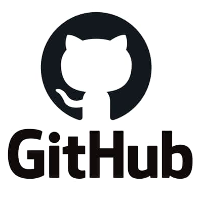
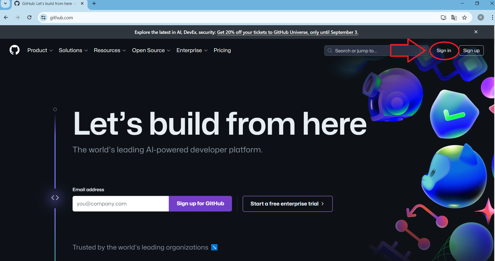
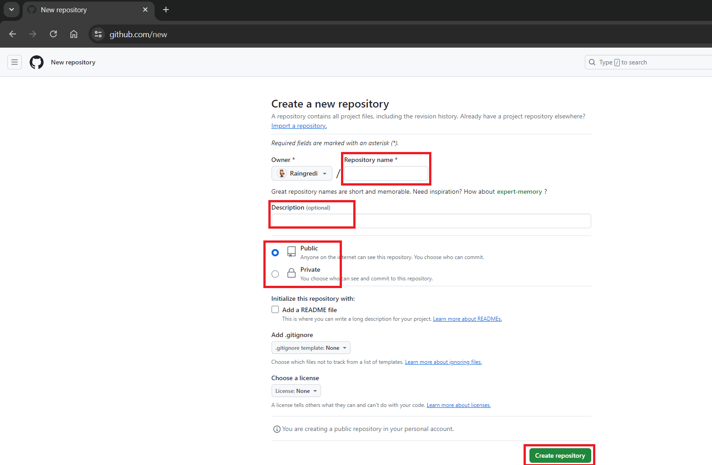
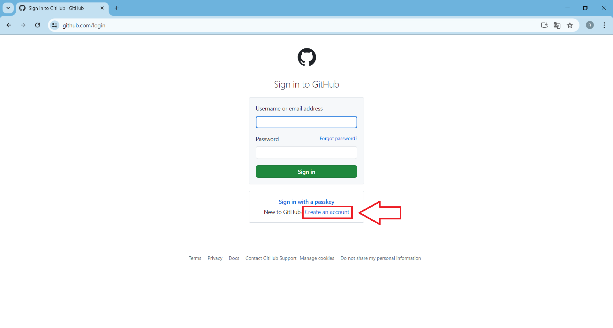
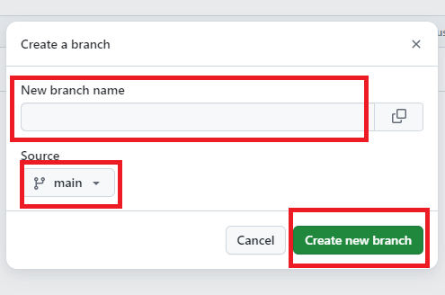
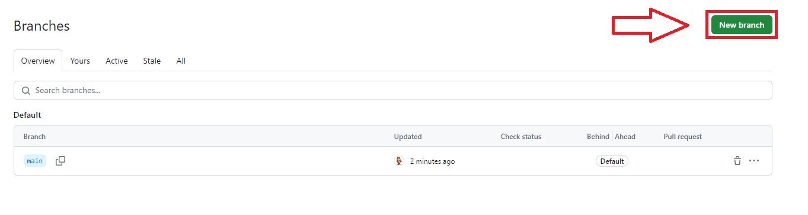
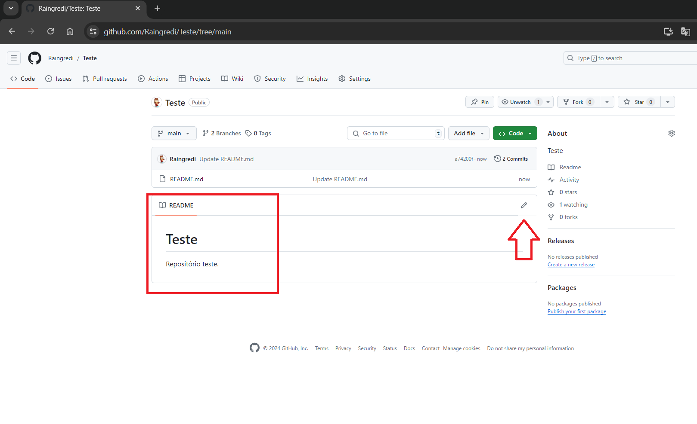
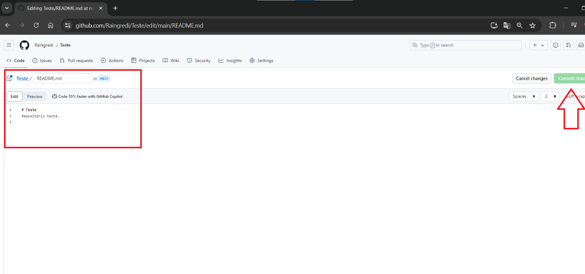

Introdução ao GitHub
-
O que é o GitHub?
GitHub é uma plataforma amplamente utilizada para hospedagem de código-fonte e controle de versão, baseada no sistema de controle de versão distribuído Git. Além de gerenciar o código, GitHub facilita a colaboração entre desenvolvedores, permitindo que vários contribuidores trabalhem no mesmo projeto simultaneamente.
Octocat é o mascote oficial do GitHub, um personagem fictício que é uma combinação de um polvo com um gato. Ela foi criada por Simon Oxley e se tornou um ícone da marca GitHub. A Octocat aparece em várias ilustrações e temas relacionados ao GitHub, ajudando a humanizar e dar um toque divertido à plataforma. Além de sua representação visual, a Octocat é frequentemente usada em adesivos, camisetas e outros produtos promocionais do GitHub. Ela também aparece em vários contextos dentro da própria plataforma, ajudando a guiar os usuários e dando um toque de personalidade ao site.

-
História e evolução do GitHub
O GitHub foi fundado em 2008 por Tom Preston-Werner, Chris Wanstrath e PJ Hyett. Ele começou como uma plataforma de hospedagem de código baseada em Git, permitindo que desenvolvedores colaborassem em projetos de software, rastreassem mudanças e gerenciassem o código-fonte de forma eficiente.
Em 2012, o GitHub sofreu um ataque de negação de serviço distribuído (DDoS), que interrompeu temporariamente seus serviços. Esse ataque foi um lembrete de que a segurança cibernética é uma preocupação constante para plataformas online, especialmente aquelas que hospedam dados críticos de código-fonte.
Apesar do ataque, o GitHub conseguiu se recuperar rapidamente e implementou medidas adicionais de segurança para proteger sua infraestrutura e seus usuários.Ao longo dos anos, o GitHub cresceu rapidamente em popularidade, tornando-se a maior e mais influente plataforma de hospedagem de código do mundo. Milhões de desenvolvedores e empresas passaram a usar o GitHub para colaborar em projetos de software de código aberto e privado.
-
Principais funcionalidades e benefícios
O GitHub oferece uma ampla gama de recursos e funcionalidades, incluindo controle de versão com Git, repositórios de código, problemas, pull requests, wikis, GitHub Pages e GitHub Discussions.
- Controle de versão com Git
- Criação de repositórios públicos gratuitos ou repositórios privados pagos
- Rastreamento de bugs, tarefas pendentes e melhorias necessárias em projetos
- Proposição de mudanças no código e solicitação de revisão e aprovação
- Seção wiki para documentação colaborativa em cada repositório
- Hospedagem de sites estáticos diretamente do GitHub usando o recurso GitHub Pages
- Facilitação de discussões para interação e colaboração
Configuração Inicial
-
Criando uma conta no GitHub
Para começar a usar o GitHub, você deve criar uma conta na plataforma. Visite GitHub.com e clique em "Sign up". Você precisará fornecer um nome de usuário, e-mail e senha. Após o registro, você pode configurar seu perfil, incluindo informações adicionais como uma foto de perfil e uma descrição. Segue abaixo as imagens da tela inicial, tela de login e a primeira tela de cadatro em que o usuário faz o seu registro para ter acesso ao repositório.
 -
Instalando o Git e configurando no GitHub
O Git é o sistema de controle de versão que o GitHub utiliza para rastrear mudanças no código. Para usar o Git, você precisa instalá-lo no seu sistema. No Windows, baixe o instalador do site oficial do Git e siga as instruções. No macOS, você pode usar o Homebrew com o comando brew install git. No Linux, use o gerenciador de pacotes da sua distribuição, por exemplo, sudo apt install git para distribuições baseadas em Debian. Após a instalação, configure o Git com seu nome e e-mail, que serão usados para identificar suas alterações no código.
-
Primeiros passos: criando e clonando repositórios
Uma vez que o Git está configurado, você pode começar a trabalhar com repositórios. Para criar um novo repositório, acesse sua conta no GitHub e clique em "New repository". Forneça um nome para o repositório, uma descrição opcional e defina suas configurações. Após criar o repositório, você pode cloná-lo para seu computador local usando o comando git clone
. Isso cria uma cópia local do repositório, permitindo que você comece a adicionar e modificar arquivos localmente.



Comandos Básicos do Git
-
Estrutura de um repositório Git
Um repositório Git tem uma estrutura interna que inclui o diretório .git, que contém todos os arquivos e informações necessárias para o controle de versão. O diretório de trabalho é onde você faz alterações nos arquivos do projeto. A área de staging é onde você prepara arquivos antes de confirmá-los no repositório. Entender essa estrutura é crucial para usar o Git de maneira eficaz e gerenciar suas mudanças de código.
-
Iniciando um repositório
Para iniciar um repositório Git em um novo projeto, navegue até o diretório do projeto e execute o comando git init. Esse comando cria um novo diretório .git que rastreará todas as mudanças no código. A partir deste ponto, você pode começar a adicionar arquivos ao repositório, fazer commits e usar outros comandos Git para gerenciar seu projeto.
-
Principais comandos: git init, git add, git commit, git push, git pull
- git init: Inicializa um novo repositório Git no diretório atual.
- git add <arquivo>: Adiciona arquivos ao staging area, preparando-os para o commit.
- git commit -m "mensagem": Cria um commit com a mensagem fornecida, registrando uma nova versão dos arquivos.
- git push: Envia commits do repositório local para o repositório remoto no GitHub.
- git pull: Atualiza o repositório local com as mudanças feitas no repositório remoto.
-
Gerenciamento de branches
Branches (ramificações) permitem que você trabalhe em diferentes versões do seu projeto simultaneamente. Você pode criar uma nova branch com git branch nome-da-branch, trocar para uma branch existente com git checkout nome-da-branch, e mesclar branches com git merge nome-da-branch. O gerenciamento eficaz de branches é essencial para organizar o desenvolvimento e facilitar a integração de novas funcionalidades.


Trabalho Colaborativo
-
Clonando e forkeando repositórios
Para colaborar em projetos, você pode clonar ou forkeá-los. Clonar um repositório cria uma cópia local completa, permitindo que você faça alterações e envie-as de volta para o repositório original. Forkeando um repositório, você cria uma cópia independente no seu perfil GitHub, permitindo que você faça alterações sem afetar o repositório original. Forks são úteis para contribuições a projetos de código aberto e experimentações.
-
Pull requests: como criar e gerenciar
Pull Requests (PRs) são uma forma de solicitar a integração de suas mudanças em um projeto. Após fazer alterações em uma branch, você pode criar um PR no GitHub para que outros revisem e comentem suas mudanças. O PR fornece uma plataforma para discussão e revisão antes de mesclar as alterações no projeto principal. Gerenciar PRs envolve revisar código, discutir melhorias e aceitar ou rejeitar mudanças.
-
Revisão de código e merge de pull requests
Revisar código é uma etapa crítica para garantir a qualidade e integridade do software. No GitHub, você pode revisar o código de um PR, fazer comentários e sugerir alterações. Após a revisão, o PR pode ser mesclado ao projeto principal usando o botão "Merge pull request". O processo de merge deve ser feito com cuidado para evitar conflitos e garantir que as mudanças integrem-se corretamente.
-
Resolvendo conflitos
Conflitos ocorrem quando alterações em branches diferentes não podem ser mescladas automaticamente. GitHub indica conflitos durante o processo de merge. Para resolver conflitos, edite os arquivos conflitantes e faça as alterações necessárias. Após resolver os conflitos, adicione os arquivos resolvidos ao staging area, faça um commit e conclua o merge.
Funcionalidades Avançadas
-
GitHub Actions: automatizando fluxos de trabalho
GitHub Actions permite automatizar fluxos de trabalho diretamente no GitHub. Você pode criar workflows que automatizam tarefas como build, teste e deployment. Workflow é definido usando arquivos YAML no diretório .github/workflows. Por exemplo, um workflow simples pode rodar testes automatizados sempre que você faz um push para o repositório.
-
Issues e Projects: gerenciamento de tarefas e projetos
Issues são usadas para rastrear bugs, melhorias e tarefas no seu projeto. Você pode criar issues para relatar problemas e atribuí-las a membros da equipe. GitHub Projects usa quadros Kanban para gerenciar tarefas e organizar o trabalho. Adicione cards para issues e tarefas, mova-os entre colunas e acompanhe o progresso.
-
GitHub Pages: criando sites estáticos com GitHub
GitHub Pages é uma funcionalidade que permite criar e hospedar sites estáticos diretamente de um repositório no GitHub. Configure GitHub Pages nas configurações do repositório e escolha a branch que contém os arquivos do seu site. GitHub Pages é ideal para hospedar documentação, blogs e sites pessoais.
-
Integrações e APIs
GitHub oferece várias integrações com serviços externos, como Slack e Jira, para melhorar a colaboração e o gerenciamento de projetos. Além disso, a API do GitHub permite que você acesse e gerencie dados do repositório programaticamente, facilitando a automação e a personalização de processos.
Boas Práticas e Dicas
-
Escrevendo bons commits e mensagens
Mensagens de commit claras e informativas são essenciais para a colaboração e o rastreamento de mudanças. Uma boa mensagem de commit deve descrever brevemente o que foi alterado e por quê. Use o tempo presente e evite mensagens genéricas como "alterações diversas".
-
Estrutura organizacional de repositórios
Organizar seu repositório de forma clara ajuda na manutenção e na colaboração. Mantenha uma estrutura de pastas lógica, utilize arquivos de configuração como .gitignore para especificar arquivos a serem ignorados e inclua
-
Segurança e permissões
Gerencie quem pode acessar e modificar seu repositório ajustando as permissões no GitHub. Use chaves SSH para garantir uma conexão segura e configurar o acesso aos seus repositórios de forma segura e eficiente.
-
Uso de templates e arquivos de configuração (.gitignore, README.md)
- .gitignore: Define quais arquivos e diretórios não devem ser rastreados pelo Git. Adicione padrões para excluir arquivos temporários ou de configuração local.
- README.md: Crie uma documentação clara e útil para o seu projeto, incluindo instruções de uso, instalação e contribuição.


Referências
- GITHUB. Get started with GitHub. Disponível em: https://docs.github.com/pt/get-started. Acesso em: 26 jun. 2024.
- LOUZADA, Vinícius. O que é Git e GitHub. Disponível em: https://www.alura.com.br/artigos/o-que-e-git-github. Acesso em: 26 jun. 2024.
- GITHUB. Issue #31516. Disponível em: https://github.com/digitalinnovationone/dio-lab-open-source/issues/31516. Acesso em: 03 jul. 2024.
- ESCOLA DNC. Introdução ao GitHub: colaboração e controle de versão para desenvolvedores. Disponível em: https://www.escoladnc.com.br/blog/introducao-ao-github-colaboracao-e-controle-de-versao-para-desenvolvedores/. Acesso em: 03 jul. 2024.